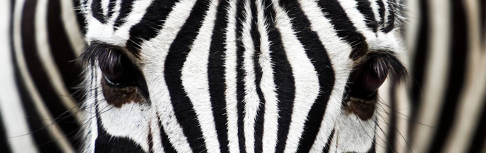

South Africa invariably wows visitors with its unique mix of improbable juxtapositions andbeautiful contradictions.
It starts with Nature’s beguiling spell. Stark mountain chains rise vertically from whale-ruled oceans; deserts
and tropical rainforests are separated by slivers of rolling farmland; giant elephant herds wander through
savanna that overlooks warm Indian Ocean rollers. South Africans themselves provide a marvelous celebration
of individuality. This is a country with 11 official languages and a national anthem sung in four mother
tongues. Meeting the locals is integral to the experience and it’s impossible not to be buoyed by their
boundless resilience and laughter. Even the lion prides and rhinos seem to share this irrepressible enthusiasm.
At the same time, South Africa is shaped by a remarkable unity, a collective identity that leaves an indelible
mark on all who visit. From the moment you step off the plane, you know you’re in the ‘Rainbow Nation’. Friendly
welcomes are unanimous and universal, regardless of the language. The diverse geography provides endless magic:
from the hippo-infested swamps of the Limpopo, to the soaring snowcapped peaks of the Drakensburg, and dozens of
sun-drenched beaches tucked away on the country’s 2000-mile coastline. Even its cities can harmoniously package
everything together – epitomized by Cape Town, one of the most singularly spectacular destinations on the planet.
Explore the Garden Route, a bewitching stretch of coastline that offers never-ending changes of scenery and
perpetual surprises. Mystical forests tower over serene beaches, the Big Five roam in private reserves, arid
desert is flanked by towering mountains, and coastal heathlands are dominated by the vibrantly-hued fynbos that
constitute the smallest and richest of the world’s floral kingdoms. The Garden Route is South Africa in a
nutshell, an enchanting journey through ever-changing landscapes, which is always relaxed and benevolently easygoing.
South Africa’s rugged coastline is a clash of styles: brutal Atlantic waves merging with warm, unruffled Indian Ocean
waters. Transcending the competing currents is a collection of the world’s largest marine animals. Three different
whale species can be found breaching just meters from the Hermanus Cliffs; you can go on a boat trip to see the
magnificent southern right whales at breathtakingly close range. Whale sharks – the peaceful plankton-eaters
that grow up to 12 meters long – roam the waters near St Lucia, while formidable great white sharks can be
seen from an underwater cage in Gansbaai. Fortunately the sharks aren’t everywhere, and safely dotted around
the 2000-mile coastline are numerous famous surfing spots.
Take a day trip down the Cape Peninsula, meandering along cliffside roads that often defy engineering.
Stop to sunbathe on fine white beaches, swim with the fearless penguins at Boulders Beach, have a meal
in a quaint fishing village, and admire the stunning views over the South Atlantic from a succession of lookouts.
Your final destination is the very southwestern tip of Africa: a jagged range of rock, sand, and a fairytale lighthouse.
Set sail from here and the next stop would be Antarctica. Just think about that for a moment.
